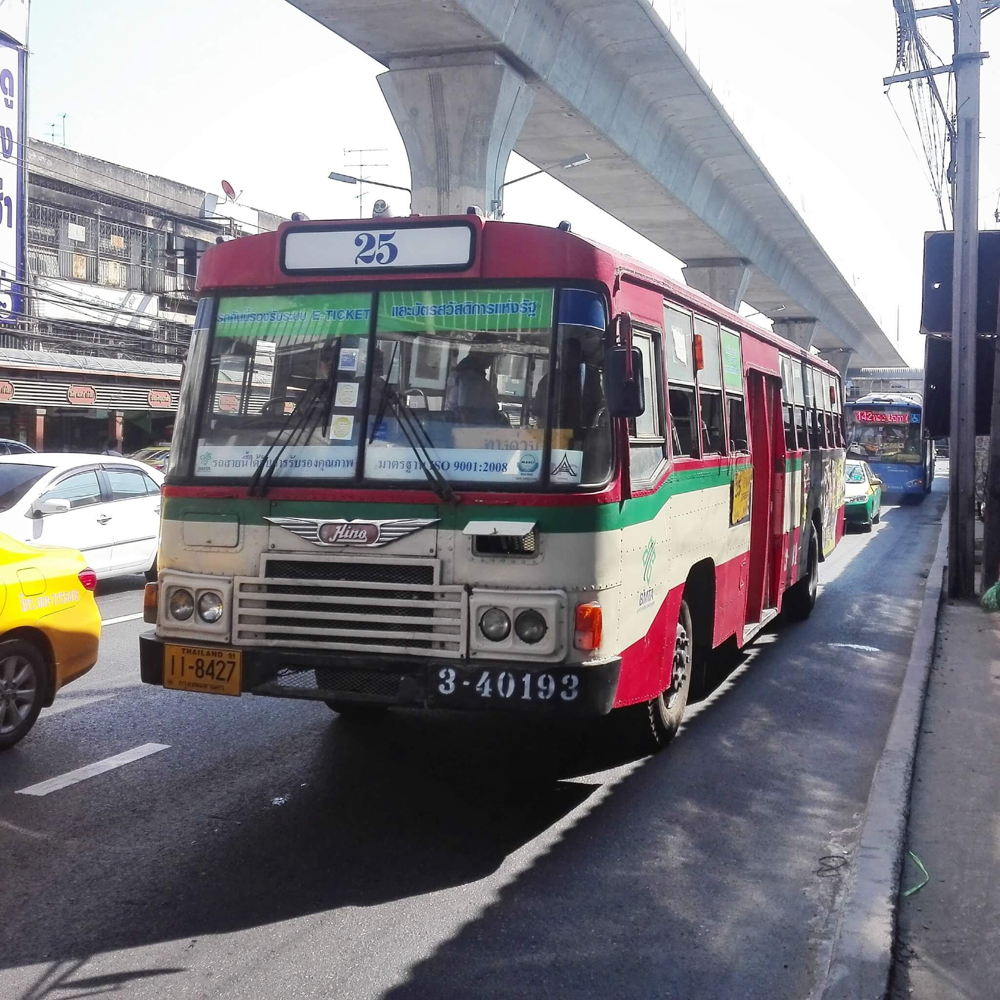

แนะนำการนั่งรถเมล์
ผมเชื่อว่าหลาย ๆ คนน่าจะยังไม่เคยนั่งรถเมล์มาก่อน ในบล็อคนี้ผมจึงอยากจะมาแนะนำการนั่งรถเมล์ให้กับทุกคน เพราะรถเมล์นั้นก็เป็นอีกการเดินทางหนึ่งในประเทศไทยที่สะดวกสบาย มีค่าเดินทางไม่มากเมื่อเทียบกับวิธีการเดินทางอื่น ๆ แถมยังมีเส้นทางที่หลากหลายอีกด้วย